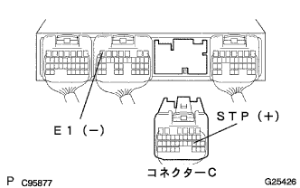

Electronic control type automatotlanthrons Axle [ECT] System (U340E) Stop lamp switch circuit |
| Step 1 | Stop lamp lighting inspection |
When the brake pedal is stepped on, the stop lamp lights up and turns off when the brake pedal is released.
|
| ||||
| OK | |
| Step 2 | Tascan data reading (stop lamp SW) |
Use the SST to perform the operation according to the screen display, display the [ECU Data Monitor] screen and check the computer data.
| Item name [Symbol] | Item explanation | Inspection condition | Reference value | Inspection items in the event of an abnormality |
|---|---|---|---|---|
| Stop lamp SW [STP] | Express while the brake pedal | Brake pedal release → Step | OFF → ON | Stop lamp switch signal |
|
| ||||
| NG | |
| Step 3 | Wire harness or connector inspection (Steppan Lump Suitsui-Engine Control Companatory) |
Cut the connector C of the engine controlled compilation.
|  |
Turn on the icunitsu -si -sijongsuitsu and check the voltage between the terminals using SST (Toyota Electric Caltester).
(The terminal array isreference)
| Terminal number (terminal symbol) | Tototsu Plamp Suitsu ASSY | Voltage [V] |
|---|---|---|
| C19 (STP) ← → B7 (E1) | OFF (the brake pedal is released) | 0-1.5 |
| C19 (STP) ← → B7 (E1) | ON (Stepped brake pedal) | 7.5-14 |
|
| ||||
| OK | ||
| ||